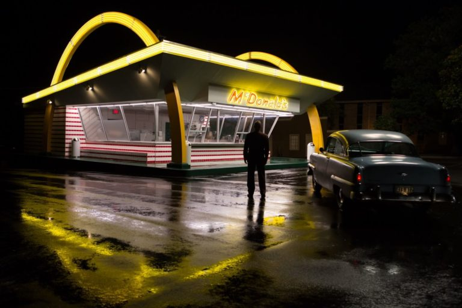
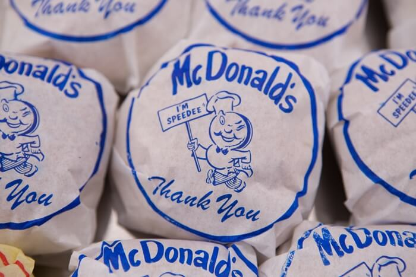
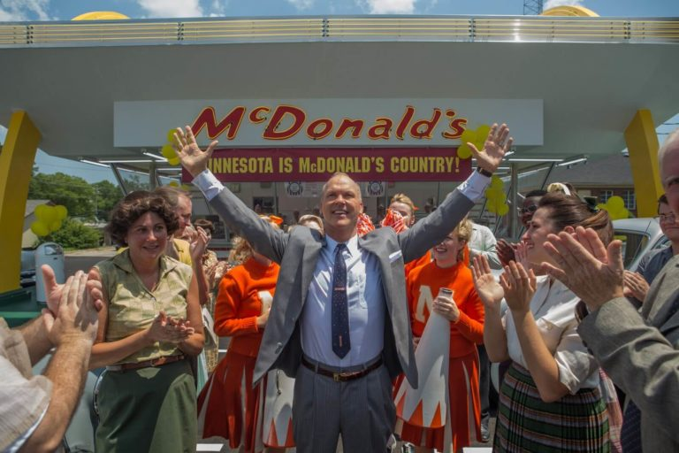

Fome de Poder – 10 lições de empreendedorismo no filme
O filme Fome de Poder conta a história da construção do McDonald’s, além de mostrar o relacionamento entre Ray Kroc e os irmãos Richard e Maurice McDonald apresentando a implantação do modelo de franquia e o crescimento da empresa.
O filme Fome de Poder
A película começa quando Ray Kroc, que vendia máquinas de milk-shake, recebe uma encomenda de seis liquidificadores. Intrigado com o tamanho do pedido para uma única lanchonete, ele decide ver pessoalmente a primeira loja McDonald’s. Ao conhecer o sistema Speedee e todas as inovações criadas pelos irmãos McDonald, Ray fica impressionado. Decide então se associar a eles para iniciar um programa de expansão baseado em franquias.
A história acabou ficando mais conhecida pela forma, no mínimo pouco ortodoxa, como Kroc conduziu a expansão da empresa. A maioria das pessoas fica impressionada como os irmãos McDonald, criadores da marca e de uma série de conceitos usados até hoje no mercado de fast food, acabaram perdendo o poder sobre a franquia.
Nesse post, no entanto, vamos mostrar 10 lições sobre empreendedorismo que podemos tirar do filme Fome de Poder. A décima dica, em especial, trata de um erro que muitas startups brasileira cometem.

Lição 1 – Pense fora da caixa
Ao entrar no mercado de drive-in os irmãos McDonald resolveram pensar fora da caixa e mudar muitos dos conceitos já consolidados. A quantidade de inovações implementadas na primeira loja é realmente impressionante.
Mudança na forma de entrega
A entrega da refeição não era mais feita no carro e sim na loja. O filme mostra uma cena em que isso acaba gerando dúvida nos clientes durante a inauguração. Mas isso acabou agilizando o processo de entrega e diminuindo os custos, já que parou de depender de garçonetes.
Criação de um ambiente familiar
Também foram retiradas as máquinas de cigarro, música alta e bebidas alcóolicas. Elas eram comuns em outros drive-ins, mas eles visavam transformar a lanchonete em um ambiente mais familiar. Isso acabou influenciando no branding da empresa. Em determinado momento do filme, Kroc ressalta o conceito de família associado à marca para alguns potenciais franqueados. Ele apresenta isso como um diferencial da marca.
Cardápio limitado
Outro ponto importante na primeira loja foi a mudança no cardápio, simplificando ele. Focando nos produtos que representavam 80% das vendas foi possível simplificar o processo, ganhar agilidade e diminuir os custos de compra e armazenamento.

Forma de consumir o produto
Outra mudança incrível foi na forma de consumir os produtos. Em um drive-in convencional as refeições eram consumidas em pratos, copos e talheres comuns. Com o McDonald’s os clientes passaram a receber o refrigerante em copos descartáveis e o hambúrguer e a batata frita em embalagens de papel. Mais uma vez os custos foram reduzidos, tanto na aquisição desses acessórios, quanto na contratação de mão de obra. Não era mais necessário uma garçonete para recolher as bandejas depois das refeições e nem um auxiliar na cozinha para lavar pratos.
Agilidade na preparação do pedido
Os irmão McDonald idealizaram o sistema Speedee. Ele dispensava o cozinheiro tradicional e criava uma linha de montagem em que cada funcionário tinha uma tarefa. Isso agilizou o processo e permitiu que os pedidos ficassem prontos em 30 segundos. A Superinteressante já publicou uma matéria explicando o sistema Speedee mais detalhadamente.
A lição principal é que você sempre pense em inovações para que possa se diferenciar da concorrência, mesmo em mercados já consolidados, como o de restaurantes.
Lição 2 – Valorize os early adopters
Ao contarem sua história para Kroc, os irmãos McDonald explicam que todas essas inovações não foram tão facilmente entendidas pelos consumidores. Isto acontece com frequência quando um negócio é tão disruptivo. Na inauguração do primeiro restaurante os primeiros clientes esperavam no carro e não entendiam que os pedidos tinham que ser retirados na loja.
No livro Startup Enxuta (Lean Startup), Eric Ries explica o conceito de early adopters. Resumidamente, são clientes que percebem o que o seu produto pode se tornar e acreditam na visão que você tem para a empresa. Essas pessoas devem ser valorizadas.
Em uma cena do filme Fome de Poder os irmãos já estão repensando o formato do restaurante, avaliando a volta para o modelo de drive-in, quando um menino vem fazer um pedido. Um early adopter. Ele não só é atendido, como também não é cobrado. Não que você não deva cobrar dos early adopters, mas valorize as pessoas que te apoiam no início, quando a ideia ainda não foi validada.
Lição 3 – Persistência é essencial
Logo que entende o conceito do McDonald’s, Kroc decide se associar aos irmãos Richard e Maurice. A ideia é expandir a empresa através do modelo de franquia. Apesar do entusiasmo, ele não convence os irmãos McDonald, que já tinham tido uma experiência ruim com franqueados, impactando na qualidade e na padronização das lojas.
Ao receber o não, Kroc retorna à sua rotina, vendendo máquinas de milk-shakes. Mas ao longo do tempo ele revê argumentos e trabalha as objeções dos irmãos McDonald. Mais preparado e com um novo discurso, acaba convencendo a iniciarem a expansão, ficando responsável pelo franqueamento de novas lojas.
Os irmãos também demonstram persistência ao longo do filme. Ao contar sua história eles dizem que tentaram vários negócios antes do McDonald’s e mesmo assim não desistiram de ter sua própria empresa.
Ao longo da criação de um novo negócio o empreendedor recebe uma série de “nãos”. O importante é se preparar, rever sua abordagem e persistir.
Lição 4 – Um bom produto é importante, mas dê atenção ao branding
As inovações pensadas pelos irmãos McDonald eram, antes de mais nada, impressionantes. O produto que eles tinham na mão era único e ia revolucionar o mercado de restaurantes. Mesmo assim eles se preocuparam com a apresentação. Os arcos dourados pensados por eles hoje não podem mais ser desassociados da empresa e ajudaram a fortalecer a marca.
Além disso, o foco em criar um ambiente familiar acabou se incorporando à comunicação da empresa, tanto para clientes quanto para novos franqueados, e hoje também faz parte do branding do McDonald’s.

Lição 5 – Aprenda a correr riscos
Ao fechar acordo com os irmãos McDonald, Ray Kroc busca dinheiro para começar a expansão da empresa. Dada a dificuldade em conseguir investimento, ele acaba hipotecando sua casa para financiar o projeto.
Correr riscos faz parte da vida do empreendedor. Obviamente os riscos devem ser avaliados e calculados, mas vale o conceito de que quanto maior o risco, melhor o retorno. Se você tem sonhos grandes tenha a certeza que dificilmente vai realizá-los se não correr algum risco.
Lição 6 – “O negócio se constrói botando a mão na massa”
Essa é uma frase do Flávio Augusto, criador do WiseUp, do Meu Sucesso.com e proprietário do time de futebol Orlando City. Mas no filme também vemos vários momentos em que Kroc demonstra este conceito.
A cena em Fome de Poder que mais representa este conceito é logo depois que ele fecha o acordo com os irmãos McDonald para começar a expansão e aparece na primeira loja franqueada, mostrando aos funcionários como funciona o processo de preparação e garantindo a qualidade. Também temos um bom exemplo disso quando os amigos do clube de golfe investem em franquias. Isso será melhor explicado na lição 8.
Lição 7 – O ganho de escala é essencial
Ao longo da história de Fome de Poder entendemos que, apesar de estarem interessados na expansão da empresa, os irmão McDonald acabaram focando demais na sua própria loja. Kroc, ao contrário, teve uma preocupação com o ganho de escala. Escolha de franqueados com o mindset certo, busca de fontes alternativas de receita, preocupação com corte de custo e outros pontos que acabaram gerando discussões entre os sócios, eram questões que visavam tornar o negócio mais atrativo. Só assim seria possível atrair mais interessados para aberturas de novas lojas.
As inovações dos irmãos Richard e Maurice mudaram o negócio de restaurantes e revolucionaram todo um mercado, mas o foco que Kroc teve em ganhar escala foi imprescindível para transformar o McDonald’s no que ele é hoje. A criação de um negócio escalável foi essencial.
Lição 8 – Os sócios devem ter a mesma visão
Um dos pontos que mais chamou gerou polêmica em Fome de Poder é a forma como Kroc tira os irmãos McDonald do negócio quando a empresa começa a crescer. Ao longo da história acompanhamos diversas discussões entre os três e essa é mais uma lição que se tira do filme. Se os sócios não têm a mesma visão, os mesmos objetivos e o mesmo mindset, dificilmente a sociedade dará certo.
Um outro bom exemplo que ilustra este ponto está relacionado com os primeiros franqueados. No início da expansão as pessoas que assumiam as franquias eram como sócios, cujo comprometimento era indispensável para o sucesso. Os primeiros que se envolveram neste negócio eram amigos aposentados, com uma boa situação financeira, que Ray havia conhecido no clube de golfe. Obviamente eles não tinham o mesmo mindset que Kroc e acabaram não dando importância para as lojas. Enfim ele começa a buscar franqueados que precisam que a empresa dê certo para garantir a própria sobrevivência, assim como ele próprio. A partir daí o negócio de franqueamento do McDonald’s começa a dar certo.
Lição 9 – Nunca é tarde para empreender
Esta é uma das lições mais interessantes do filme Fome de Poder. Em determinado momento o próprio Kroc explica para o espectador, quebrando a quarta parede, que o segredo do seu sucesso foi persistência. Ao longo da vida ele tentou empreender diversas vezes, mas todas as empresas tiveram um desempenho medíocre. Apenas aos 52 anos, quando conheceu os irmãos McDonald, é que Ray realmente conseguiu montar um negócio sensacional.
O mais importante é que ele sempre manteve o entusiasmo. Em uma cena, sua esposa pergunta quando ele vai desistir da ideia de construir uma grande empresa e ele responde que provavelmente nunca.
Lição 10 – Descubra seu modelo de monetização
Ter um grande produto não é suficiente. Tenha um modelo de monetização consistente. Muitas startups brasileiras cometem o erro de achar que, tendo um produto excelente, o dinheiro não é uma preocupação. Ele estaria disponível através de um investidor anjo ou de uma venture capital, como aconteceu com empresas americanas como Google e Facebook. Realmente existem casos de empresas que receberam investimento antes mesmo de concretizar ou até definir seu modelo de monetização. Mas esta não é a regra e no Brasil isso é ainda mais difícil. O custo de oportunidade no Brasil é muito alto e por isso o investimento acaba acontecendo com empresas que já tem um fluxo de caixa e precisam de dinheiro para expansão, e não para se manter.
No filme Fome de Poder vemos que, apesar da franquia McDonald’s ser um excelente produto, Ray continua tendo dificuldades financeiras para manter o negócio. Só quando ele define afinal seu modelo de monetização, focado em um negócio imobiliário que vinculava os terrenos das lanchonetes ao contrato de franqueamento, é que a empresa realmente começa a dar certo e crescer de forma consistente.